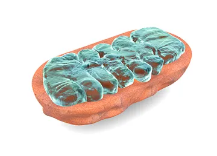

Mitocôndria
-
O que são:
As mitocôndrias são organelas citoplasmáticas encontradas nas células eucarióticas (possuem membrana nuclear). O termo origina-se do grego mitos que diz respeito a “fio” e condros corresponde a “cartilagem”.
As mitocôndrias têm a responsabilidade de transportar energia para as células. Os aspectos dessa organela podem variar de forma, tamanho e quantidade. Elas são encontradas em células presentes no coração, nos sistemas nervoso e muscular. Essas organelas estão localizadas em sua maioria nos eucariontes. No entanto, é também encontrada no reino protista chamado de Archezoa.
-
As mitocôndrias têm a responsabilidade de transportar energia para as células. Os aspectos dessa organela podem variar de forma, tamanho e quantidade. Elas são encontradas em células presentes no coração, nos sistemas nervoso e muscular. Essas organelas estão localizadas em sua maioria nos eucariontes. No entanto, é também encontrada no reino protista chamado de Archezoa.
-
Composição
A mitocôndria apresenta composições e estruturas formadas por membranas. A membrana interna é formada por dobras que constituem as cristas mitocondriais. Já a membrana externa tem como característica o aspecto liso e é composta por lipídios e proteínas chamadas de deporinas.
-
Formação
As mitocôndrias novas são formadas a partir do processo de autoduplicação. Portanto, a reprodução acontece em decorrência de outra mitocôndria. Ao realizar-se a divisão celular, a consequência é a formação de duas células-filhas. Elas ganharão a metade da mitocôndria obtida da célula-mãe. Com a evolução, as mitocôndrias-filhas se duplicam e estabelecem a quantidade original comum da organela.
-
A maioria dos seres vivos utiliza esse processo para obter energia para suas atividades. Através da respiração aeróbica é quebrada a molécula de glicose. A glicose é produzida na fotossíntese pelos organismos produtores e obtida através da alimentação pelos consumidores.
Pode ser representada pela seguinte reação:
C6H12O6 + 6 O2 ⇒ 6 CO2 + 6 H2O + Energia
Etapas
O processo é dividido em três etapas para ser melhor compreendido, que são
-
Glicólise:
A glicólise é o processo de quebra da glicose em partes menores, liberando energia. Essa etapa metabólica acontece no citoplasma da célula enquanto as seguintes estão dentro da mitocôndria.
 -
Ciclo de krebis:
Nessa etapa, cada piruvato produzido na etapa anterior, entra na mitocôndria e passa por reações para formar mais moléculas de ATP.
-
Fosforilação Oxidativa:
Essa última etapa metabólica, chamada de fosforilação oxidativa ou cadeia respiratória, é responsável pela maior parte da energia produzida ao longo do processo.
Há a transferência de elétrons provenientes dos hidrogênios, que foram retirados das substâncias participantes nas etapas anteriores. Com isso, são formadas moléculas de água e de ATP.
-
Respiração Aeróbica
-
Em ambientes onde o oxigênio é escasso, como regiões marinhas e lacustres mais profundos, os organismos precisam utilizar outros elementos para receber os elétrons na respiração.
É o que fazem muitas bactérias que utilizam compostos que contêm nitrogênio, enxofre, ferro, manganês, entre outros.
Certas bactérias são incapazes de realizar a respiração aeróbica, pois não possuem as enzimas que participam do ciclo de Krebs e da cadeia respiratória.
Esses seres podem até morrer na presença do oxigênio e são chamados anaeróbios estritos, um exemplo é a bactéria causadora do tétano.
-
Outras bactérias e fungos são anaeróbios facultativos, pois realizam a fermentação como processo alternativo à respiração aeróbica, quando não existe oxigênio.
Na fermentação, não há a cadeia transportadora de elétrons e são substâncias orgânicas que recebem os elétrons.
Há diferentes tipos de fermentação que produzem compostos a partir da molécula de piruvato, por exemplo: o ácido lático (fermentação lática) e o etanol (fermentação alcoólica).